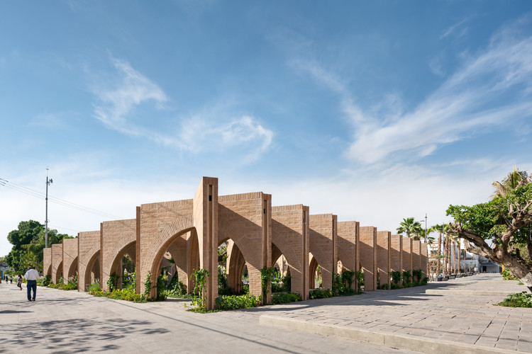

Jojutla,Mexico
|
This is Jojutla, Mexico. It carries a compelling history woven through diverse cultural threads. Originally inhabited by the Tlahuica people, it later became a significant colonial settlement during Spanish rule. Known for its agricultural prowess and historical sugar industry, Jojutla saw economic growth amidst challenges, including the Mexican Revolution. Over time, it has evolved into a thriving community, blending its rich heritage with contemporary aspirations. |
Jojutla's agricultural legacy, particularly in sugarcane cultivation, has been a cornerstone of its historical and economic development. The town's fertile lands and favorable climate were conducive to growing sugarcane, leading to the establishment of sugar mills and haciendas. During the colonial era and continuing through the 19th and early 20th centuries, Jojutla became renowned for its sugar industry. The cultivation of sugarcane and the production of sugar were major economic activities that shaped the town's landscape and livelihoods of its inhabitants. |
Also, the region surrounding Jojutla is known for its thermal springs, offering natural hot springs that locals and visitors enjoy for relaxation and therapeutic purposes. |